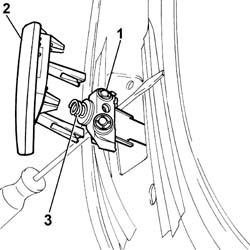
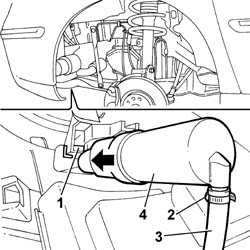

5050D08 HEADLAMP WASHER JET/S - R R
- Path
- Procedures > 50 AUXILIARY UNITS > 5050 SCREEN WASHERS AND HEADLAMP WASH/WIPE > 5050D HEADLAMP WASH/WIPE > 5050D08 HEADLAMP WASHER JET/S - R R
- Kind
- repair procedure (removal / refitting; the operation number is the code)
- Applies to
- all engines; all production periods
- Interactive page
- https://sloeber94.github.io/elrnDB-fUlss/en/#/179007512
Applies to: all engines; all production periods
 Removing
Removing
 Refitting
Refitting- Position the vehicle on a lift.
Op. 4450B12 FRONT OR REAR WHEELS (TWO) - R+R
Op. 7055B91 RIGHT FRONT WHEEL ARCH LINER - R.R.
Op. 7055B90 LEFT FRONT WHEEL ARCH LINER - R.R.
- Protect the area surrounding the headlamp washer trim.
1. Extract the headlamp washer jet using a suitable tool and secure it.
2. Release and remove the trim.
3. Keep the spring.
- Remove the tool and release the headlamp washer jet.

Applies to: all engines; all production periods
1. Act on the fastening clips and release the headlamp washer jet from the mounting on the headlamp.
2. Remove the retaining band.
3. Disconnect the pipe from the headlamp washer pump.
4. Remove the headlamp washer jet.

Applies to: all engines; all production periods
- Proceed in the same way to remove the other headlamp washer jet.
Applies to: all engines; all production periods
Refitting
Removing- Connect the pipe from the headlamp washer jet to the headlamp washer and secure it using a suitable band.
- Position the headlamp washer jet and secure it to the mounting on the headlamp.
- Extract the headlamp washer jet using a suitable tool and secure it.
- Position the spring on the headlamp washer jet.
- Position the trim and secure it to the headlamp washer jet.
- Remove the tool and release the headlamp washer jet.
- Remove the protection positioned previously.
- Proceed in the same way to fit the other headlamp washer jet.
Op. 7055B90 LEFT FRONT WHEEL ARCH LINER - R.R.
Op. 7055B91 RIGHT FRONT WHEEL ARCH LINER - R.R.
Op. 4450B12 FRONT OR REAR WHEELS (TWO) - R+R
- Remove the vehicle from the lift.
- Top up the screen washer fluid level.